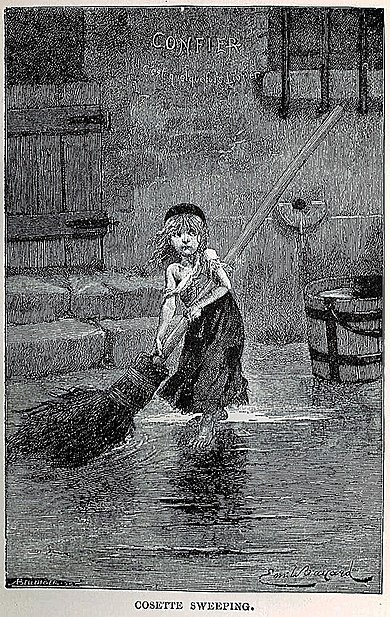
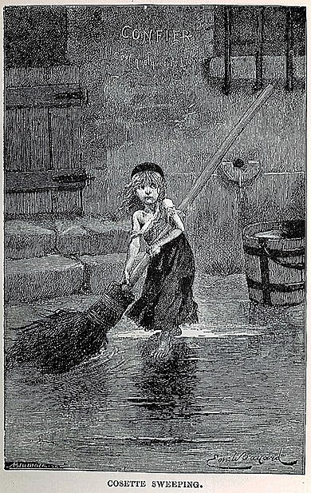
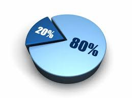

| اختيار | إظهار التفاصيل | السعر | العنوان | ISBN رمز الكتاب |
|---|---|---|---|---|
| 30000 ل.س | البؤساء | 954-456132789 | ||
|
الناشر: دار العلم، للكاتب فكتور هوغو تصنيف الكتاب: خيال تاريخي مأساة ملخص: البؤساءأو البائسون هي رواية تاريخية ملحمية من تأليف الكاتب الفرنسي فكتور هوغو نشرت في سنة 1862، وتعد من أشهر روايات القرن التاسع عشر، إنه يصف وينتقد في هذا الكتاب الظلم الاجتماعي في فرنسا بين سقوط نابليون في 1815 والثورة الفاسلة ضد الملك لويس فيليب في 1832 أهم المواضيع المطروحة: المواضيع  


تحدث الكتاب عن الثورة ضج الملك لويس تحدث عن قصة الشخصية كوزيت تحدث عن قصة السجين جان فالجان |
||||
| 40000 ل.س | العادات الذرية | 954-16756325 | ||
|
الناشر: غير محدد، للكاتب جيمس كلير تصنيف الكتاب: التنمية الذاتية ملخص: يقدم "العادات الذرية" إطارًا عمليًا لفهم وتغيير العادات من خلال تغييرات صغيرة تؤدي إلى نتائج كبيرة على المدى الطويل. يركز الكتاب على أهمية الأنظمة بدلاً من الأهداف لتحقيق النجاح الشخصي. أهم المواضيع المطروحة: المواضيع 

يناقش كيف تؤثر البيئة المحيطة على عاداتنا يشدد على التحسينات الصغيرة اليومية يقدم الكتاب قوانين لتكوين العادات الجيدة وكسر العادات السيئة |
||||
| 80900 ل.س | جلسة علاج | 954-423258741 | ||
|
الناشر: غير محدد، للكاتب سلمان العتيبي تصنيف الكتاب: العلاج النفسي ملخص: العلاج النفسي هو عملية تفاعلية تهدف إلى مساعدة الأفراد على التغلب على مشكلاتهم النفسية وتحسين صحتهم النفسية من خلال أساليب نفسية متنوعة. يتضمن ذلك جلسات فردية أو جماعية مع معالجين مؤهلين. أهم المواضيع المطروحة: المواضيع 

التركيز على التغيير السلوكي أهمية البيئة الداعمة أنواع العلاج النفسي |
||||
| 65000 ل.س | الأب الغني والأب الفقير | 954-456296318 | ||
|
الناشر: مكتبة جرير، للكاتب روبرت ت.كيوساكي تصنيف الكتاب: إدارة الأعمال، التعليم المالي ملخص: يتناول كتاب "الأب الغني والأب الفقير" كيفية بناء الثروة وتحقيق الاستقلال المالي من خلال التعلم من تجارب المؤلف مع "الأب الغني" (والد صديقه) و"الأب الفقير" (والده البيولوجي). يركز الكتاب على أهمية الأصول والذكاء المالي وكيفية اتخاذ قرارات مالية سليمة. أهم المواضيع المطروحة: ال 

الفرق بين الأصول والالتزامات التفكير المالي أهمية التعليم الذاتي |
||||
| 28000 ل.س | التهم هذا الضفدع | 954-741246096 | ||
|
الناشر: مكتبة خير جليس، للكاتب براين تريسي تصنيف الكتاب: تطوير الذات، إدارة الوفت ملخص: يقدم كتاب "التهم هذا الضفدع" استراتيجيات فعالة للتغلب على التسويف وتحسين الإنتاجية من خلال التركيز على المهام الأكثر أهمية وصعوبة أولاً. يتضمن الكتاب 21 طريقة تساعد الأفراد على إنجاز أعمالهم بكفاءة وسرعة. أهم المواضيع المطروحة: المواضيع


قاعدة 20/80 أهمية البدء بالأصعب قوانين القضاء على التسويف |
||||